[001] 环境变量_00.png — 1372x735
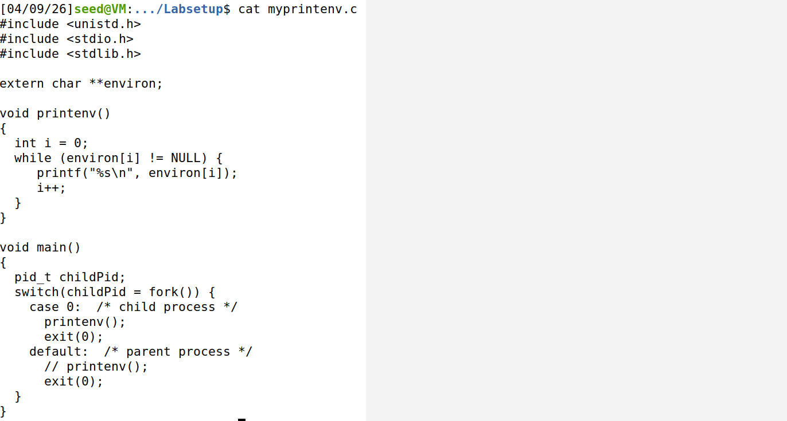
[002] 环境变量_01.png — 1372x289
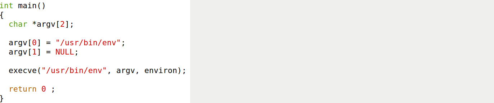
[003] 环境变量_02.png — 1372x139
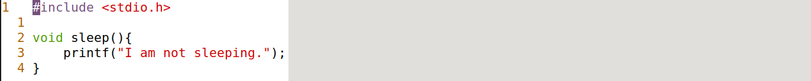
[004] 环境变量_03.png — 1372x133
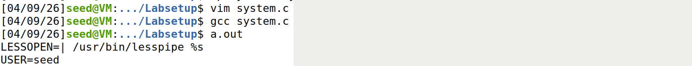
[005] 环境变量_04.png — 1372x55
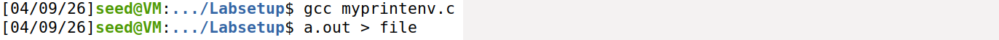
[006] 环境变量_05.png — 1372x493
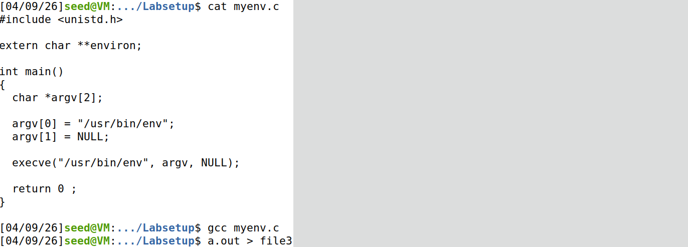
[007] 环境变量_06.png — 1372x156
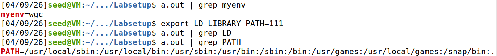
[008] 环境变量_07.png — 1372x132
[009] 环境变量_08.png — 1372x212
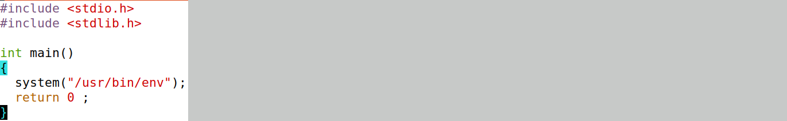
[010] 环境变量_09.png — 1372x154
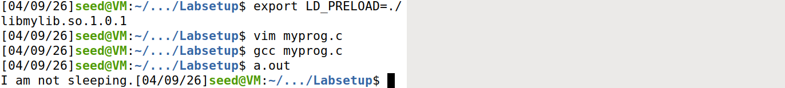
[011] 环境变量_10.png — 1372x166
[012] 环境变量_11.png — 1372x236
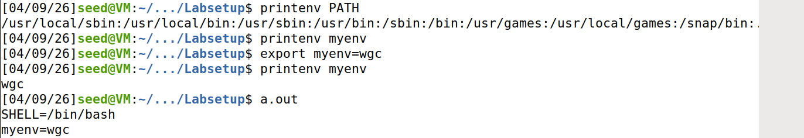
[013] 环境变量_12.png — 1372x315
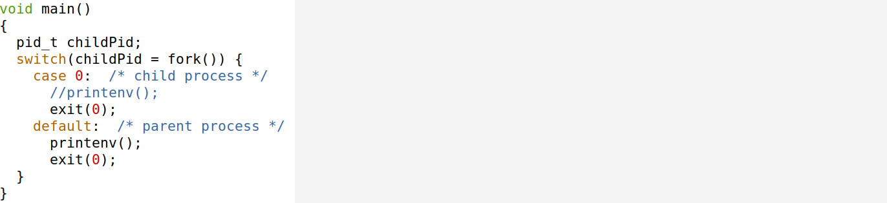
[014] 环境变量_13.png — 1372x494
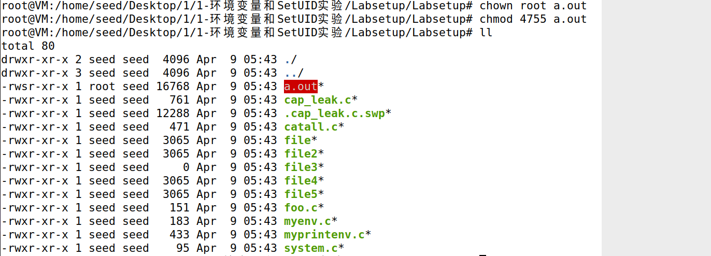
[015] 环境变量_14.png — 1372x164
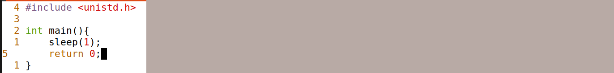
[016] 环境变量_15.png — 1372x55
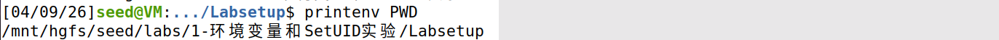
[017] 环境变量_16.png — 1372x132
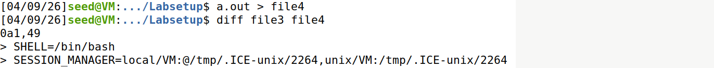
[018] 环境变量_17.png — 1372x367
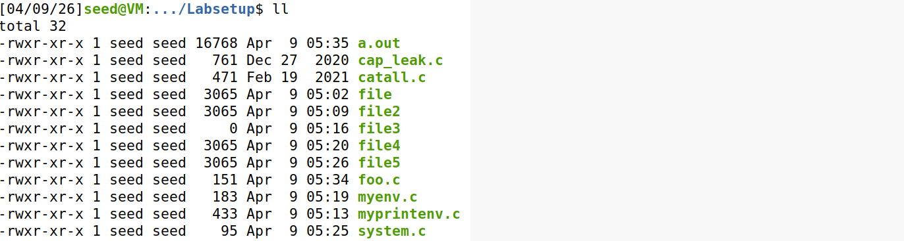
[019] 环境变量_18.png — 1372x78
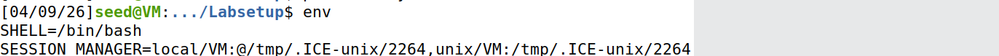
[020] 环境变量_19.png — 1372x79
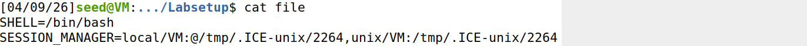
[021] 环境变量_20.png — 1372x268
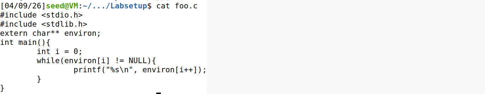
[022] 环境变量_21.png — 1372x314
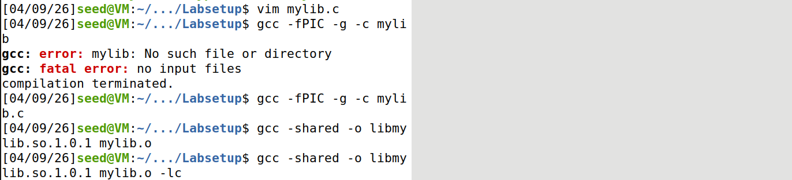
[023] 环境变量_22.png — 1372x160
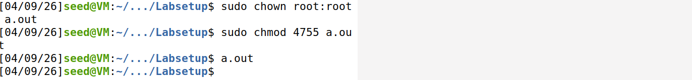
[024] 环境变量_23.png — 1372x81
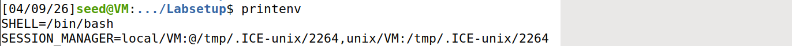